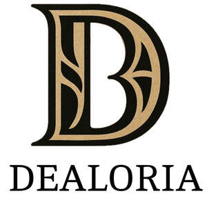

Trade Mark Journal No.2025/025 20 June 2025
UK00004212657 2 June 2025 (24)

- Class 24
- Duvet covers; Covers for eiderdown and duvets; Duvets; Covers for duvets; Shams (Pillow -); Pillow shams; Comforters (bedding); Quilted blankets [bedding]; Pillowcases [pillow slips]; Bed linen and blankets; Eiderdown covers; Silk bed blankets; Ticks (mattress and pillow coverings); Textile covers for duvets; Pillow covers; Fabric bed valances; Bed blankets; Blankets (Bed -); Comforters [covers]; Mattress covers; Covers for pillows; Sofa blankets; Bed linen; Linen for the bed; Linen (Bed -); Valanced bed sheets; Valanced bed covers; Bed valances; Pillowcases; Comforters; Comforters for beds; Canopies (bed linen); Cot bumpers [bed linen]; Bed covers; Crib bumpers [bed linen]; Eiderdowns; Bed clothes and blankets; Quilt bedding mats; Bed blankets made of cotton; Bed warmer covers; Eiderdowns [down coverlets]; Bed quilts; Bed linen of paper; Sofa covers; Towelling coverlets; Bedsheets; Fitted bed sheets; Covers for mattresses; Ticks [mattress covers]; Valance sheets; Pillow slips; Bed linen and table linen; Cotton blankets; Flat bed sheets; Bed covers of paper; Eiderdowns [quilts]; Coverlets [bedspreads]; Futon quilts; Silk blankets; Contoured mattress covers; Flannel [fabric]; Bed coverings; Bed clothes; Infants' bed linen; Bed sheets of paper; Fabric curtains; Bed sheets of plastic [not being incontinence sheets]; Bed sheets of plastic, not being incontinence sheets; Bedspreads; Linen [fabric]; Quilt covers; Duvets filled with goose feathers; Covers for cushions; Cushions (Covers for -); Cot blankets; Paper pillowcases; Flannel; Cot sheets; Bed canopies; Crib sheets; Chenile fabric; Chenille fabric; Duvets filled with goose down; Woollen blankets; Fabrics for use in covering armchairs; Valances for beds; Terry linen; Bedsheets of leather; Shams; Fitted toilet covers [fabric]; Cot covers; Bed pads; Mattress slips [other than incontinence]; Linen cloth; Cloth handkerchiefs; Kitchen towels of cloth; Gauze [cloth]; Towel sheet; Face cloths of towelling; Shower curtains of textile or plastic; Diapered linen; Linen (Diapered -); Cloth; Crepe cloth; Textile face towels; Face towels of textile; Silk cloth; Silk [cloth]; Bed linen made of non-woven textile material; Curtains of plastic; Bath sheets (towels); Curtains and lace curtains of textiles or plastic; Gauze fabric; Curtains of textile or plastic; Cloth banners; Foulard [fabric]; Hooded towels; Cloth napkins; Quilts of towel; Cloth bunting; Shower room curtains; Taffeta [cloth]; Household linen, including face towels; Curtain fabric; Face towels of textiles; Woolen cloth; Linen; Woollen cloth; Japanese cotton towels (tenugui); Cloth doilies; Fire-retardant textile shower curtains; Denim [cloth]; Printed calico cloth; Calico cloth (Printed -); Cotton cloths; Sheets of sailcloth for screening; Non-woven cloth; Shower curtains made of plastic material; Bathroom towels; Curtains of textiles or plastic; Muslin fabric; Face towels; Fitted toilet lid covers [made of fabric or fabric substitutes]; Jute cloth; Woven linen fabrics; Cloth for tatami mat edging ribbons; Disposable bedding of paper; Towels of textile; Towels [textile]; Sleeping bag liners; Bean bag covers; Sleeping bag sheet liners; Sleeping bags; Pillow cases; Baby blankets; Textile fabrics for lingerie; Lingerie fabrics; Lingerie fabric; Knitted elastic fabrics for ladies underwear; Woollen fabrics for use in the manufacture of trousers; Textile fabrics for use in the manufacture of sportswear; Knitted elastic fabrics for sportswear; Textile fabrics for the manufacture of clothing; Knitted elastic fabrics for gymnastic dresses; Nightdress cases of textile; Woollen fabrics; Textile handkerchieves; Lace fabrics; Woollen fabrics for use in the manufacture of coats; Woollen fabrics for use in the manufacture of suits; Textile fabrics for use in the manufacture of curtains; Textile fabrics for use in the manufacture of pillowcases; Textile fabrics for use in the manufacture of bedding; Elastic fabrics for clothing; Textile fabrics for use in the manufacture of towels; Knitted fabrics of silk yarn; Woollen fabrics for use in the manufacture of jackets; Knitted fabrics of cotton yarn; Apparel fabrics; Knit lace fabrics; Waterproof fabrics for use in the manufacture of trousers; Textile fabrics; Towelling [textile]; Non-woven textile fabrics for use as interlinings; Napery of textile; Napery [textile]; Fabric for footwear; Footwear (Fabric for -); Hand-towels made of textile fabrics; Textile fabrics for use in manufacture; Fibre fabrics for use in the manufacture of linings of shoes; Jersey fabrics for clothing; Knitted fabrics of wool yarn; Fabric for manufacturing men's outerwear; Viscose textiles; Bedroom textile fabrics; Textile fabrics for use in the manufacture of sheets; Fabrics for use as linings in clothing; Covered rubber yarn fabrics [for textile use]; Waterproof textile fabrics; Curtains of textile; Woollen fabric; Wool yarn fabrics; Textile fabrics for use in the manufacture of furniture; Knitted elastic fabrics for bodices; Fabric for use in the manufacture of clothing; Woolen fabric; Waterproof fabrics for use in the manufacture of hats; Textile fabrics for use in the manufacture of beds; Rubberized textile fabrics; Household textile goods; Furnishing fabrics being textile piece goods; Household textile piece goods; Textile goods, and substitutes for textile goods; Fabrics being textile piece goods for use in embroidery; Textile goods for use as bedding; Textile piece goods for clothing; Quilts of textile; Textile fabrics for making up into household textile articles; Fabrics being textile piece goods; Textiles for furnishings; Household textiles; Furniture coverings of textile; Coverings (Furniture -) of textile; Textile fabrics for making into clothing; Wall decorations of textile; Textile piece goods for making curtains; Textile piece goods for making into clothing; Textiles for interior decorating; Textile fabric piece goods for use in the manufacture of clothing; Textiles for food wrapping; Fabrics being textile piece goods for use in tapestry; Textile piece goods; Piece goods (Textile -); Textile piece goods made of cotton; Textile fabrics for making into linens; Textile piece goods for making-up into clothing; Textile fabrics for making into blankets; Textile piece goods for use in the manufacture of protective clothing; Fabrics being textile piece goods for use in manufacture; Fabrics being textile piece goods for use in patchwork; Fabrics for manufacturing garden furniture; Textile piece goods for furnishing purposes; Household textile articles made from non-woven materials; Textiles; Textile fabric piece goods for the manufacture of upholstered furniture; Handcrafted textile wall hangings; Textiles and substitutes for textiles; Doilies of textile; Tissues being textile piece goods; Textile piece goods for use in the manufacture of shoes; Curtains made from textile materials; Curtains made of textile materials; Curtains made of textile fabrics; Small curtains made of textile materials; Non-woven textile piece goods; Silk fabrics for furniture; Handkerchiefs of textile; Textile handkerchiefs; Textile used as lining for clothing; Sponge cloths [textile piece goods]; Tablemats of textile; Textile fabric; Textile tablecloths; Tablecloths of textile; Textile piece goods for making bedding covers; Kitchen towels [textile]; Kitchen towels of textile; Fabrics [textile piece goods] made of carbon fibre; Piece goods made of textile materials bonded with plastics; Household textile articles; Textiles in the form of window furnishings; Textile piece goods made of plastics materials; Textile piece goods for making-up into towels; Textile fabrics for use in the manufacture of wall coverings; Printed textile piece goods; Textile piece goods for use in the manufacture of industrial filters; Tapestries of textile; Waterproofed textile piece goods; Textile piece goods for use in the manufacture of boots; Fabrics being textile goods in roll form; Towels made of textile materials; Fabrics being textile piece goods made of mixtures of fibres; Dinner mats of textiles; Textile napkins; Textile fabrics in the piece; Textile goods for making headshawls and yashmaghs; Piece goods made of textile materials bonded with rubbers; Textile coasters; Coasters of textile; Printing blankets of textile material; Breathable piece goods made of textile materials bonded with plastics; Disposable bedding of textile; Paper yarn fabrics for textile use; Fabrics for textile use; Textiles made of wool; Coverings of textile and of plastic for furniture (unfitted); Fabrics for shirts; Lining fabrics for shoes; Fabric linings for clothing; Woven fabrics for use in the manufacture of clothing for use in clean rooms; Handkerchiefs of textiles; Mole skin; Towels [textile] for use in connection with toddlers; Towels [textile] for use in connection with babies; Non-woven textile fabrics; Textile labels; Labels (textile); Labels of textile; Flags of textile; Reinforced fabrics [textile]; Disposable tablecloths of textile; Bunting of textile or plastic; Towels [of textile]; Streamers of textile; Fiberglass fabrics, for textile use; Fiberglass fabrics for textile use; Markers [labels] of cloth for textile fabrics; Face cloths of textile; Pennants of textile; Materials (Textile -) for use in the manufacture of footwear; Banners of textile; Banners textile; Cloths of woven textile material for washing the body [other than for medical use]; Fibreglass fabrics for textile use; Mats [coasters] of textile; Suiting materials [textile]; Serviettes of textile; Textile serviettes; Flags of textile or plastic; Textile printers' blankets; Printers' blankets of textile; Linings [textile]; Lining fabrics of textile in the piece; Cloths of non-woven textile material for washing the body [other than for medical use]; Curtain linings; Curtain valences; Curtain fabrics; Curtain tie-backs of textile; Curtains; Curtain holdbacks of textile; Textile curtain pelmets; Curtain material; Shower curtains; Door curtains; Pleated curtains; Curtain holders of cloth; Curtain holders or tiebacks of textile; Blackout curtains; Lace curtains; Window curtains; Curtain holders (Textile -); Curtains for showers; Drapes in the nature of curtains; Swags [curtains]; Draperies [thick drop curtains]; Net curtains; Moquettes [curtains]; Curtains for windows; Vinyl curtains; Curtain loops of textile material; Curtain holders of textile material; Drapes; Curtain holders of textile materials; Drapery; Curtain loops made of textile materials; Fabrics for making curtains; Curtains made of plastics for use in shower baths; Curtains of textile material; Valances [textile draperies]; Drapes in the nature of curtains made of textile materials; Fabric valances; Woolen blankets; Swaddling blankets; Picnic blankets; Hooded blankets; Lap blankets; Blankets with sleeves; Yoga blankets; Receiving blankets; Travelling blankets; Children's blankets; Bed blankets made of man-made fibres; Blankets for household pets; Blankets for outdoor use; Blanket throws; Towels of textiles; Afghans [knitted covers]; Sleeping bags [sheeting]; Glass cloths [towels]; Coverlets; Towels; Bivouac sacks being covers for sleeping bags; Afghans; Travelling rugs [lap robes]; Cloths; Mats of linen; Bath wrap towels; Counterpanes; Linens; Protective loose covers for mattresses and furniture; Woven fabrics for cushions; Cushion covers; Cushion covering materials; Chair covers; Canopy covers; Textile piece goods for making cushion covers; Table covers; Seat covers [loose] for furniture; Table covers of damask; Toilet seat covers; Toilet seat covers of textile; Table covers of plastic; Covers for toilet lids of fabric; Fitted toilet lid covers of fabric; Covers (Fitted toilet lid -) of fabric; Covers (fitted toilet lid -)[fabric]; Covers of textile for toilet seats; Fitted toilet seat covers of textile; Replacement seat covers [loose] for furniture; Furniture (Loose covers for -); Covers [loose] for furniture; Loose covers for furniture; Canopies [covers for beds]; Protective covers for furniture [loose]; Unfitted fabric furniture covers; Textile covers [loose] for furniture; Table covers of non-woven textile fabrics; Curtaining material being textile piece goods; Synthetic textile piece goods; Fabrics of man-made fibres being textile goods in piece form; Non-woven piece goods; Textile linings in the piece; Breathable piece goods made of textile materials bonded with rubber; Textile piece goods (Polyurethane coated -) for making waterproof clothing; Furnishing fabrics in the piece; Tartan piece goods; Piece goods made of woven plastic material; Fiberglass fabric for textile use; Hat linings, of textile, in the piece; Linings (Hat -), of textile, in the piece; Piece goods made of non-woven plastic material; Fabric; Laminated textile piece goods having insulating properties; Coated fabrics for use in the manufacture of leather goods; Textile material; Material (Textile -); Woven fabrics for furniture; Jute fabric; Plastic woven textile materials for use in agriculture; Cotton knitted fabric; Knitted fabric; Cotton fabric; Silk fabric for printing patterns; Embroidery fabric; Woven silk fabrics; Hemp fabric; Fibre fabrics for use in the manufacture of articles of clothing; Felt piece goods; Woven furnishing fabrics; Coated woven textile materials; Fabric for use in the manufacture of bags; Hemp yarn fabrics; Silk fabrics; Jute fabrics; Jersey material [fabric]; Non-woven fabric; Textile fabric of animal skins imitations; Loose covers made of textile materials for furniture; Materials for soft furnishings; Furnishing fabrics; Upholstery materials; Materials for upholstery; Textile substitute materials made from synthetic materials; Fabrics for the manufacture of furnishings; Curtaining materials; Textile materials for use in the manufacture of blinds; Furnishing and upholstery fabrics; Composite textile materials; Textiles made of synthetic materials; Furniture coverings made of plastic materials; Materials for use in making clothes; Materials (Textile -) for use in the manufacture of soles; Materials (Textile -) for use in the manufacture of linings for footwear; Window furnishing fabrics; Filtering materials of textile; Materials (Textile -) for use in the manufacture of insoles; Interlining materials; Honeycomb materials [textiles]; Materials for use in filtration [textile]; Inlay materials of non-woven fabrics; Wall hangings; Wall hangings of silk; Wall hangings of textile; Friezes [textile wall hangings]; Borders (textile wall hangings); Wall plaques of textile; Wall fabrics; Tapestry [wall hangings], of textile; Tapestries [wall hangings], of textile; Padded coverings [hangings of textile] for existing walls; Bunting flags; Cloth flags; Plastic flags; Brocade flags; Fabric flags; Nylon flags; Flags and pennants of textile; Pennants [flags], other than of paper; Flags, not of paper; Banners; Textile flags used for place settings; Plastic banners; Banners of textile or plastic; Bunting; Cloth pennants; Plastic pennants; Plastic bunting; Sleeping bags for camping; Sleeping bags for babies; Bags for sleeping bags [specifically adapted]; Mosquito nets; Nets (Mosquito -); Insecticide-treated mosquito nets; Insect protection nets; Fly netting of plastic; Pocket handkerchiefs of textile; Tablecloths of textiles; Hand towels of textile; Textile tissues; Non-woven textiles; Table cloth of textile; Textile napkins [table linen]; Table cloths of textile; Table linen of textile; Napkin liners of textile; Patterned textiles for use in embroidery; Face flannels of textile; Polyester textiles; Sponge cloths for textile use; Textiles made of linen; Textiles made of cotton.
DEALORIA LTD